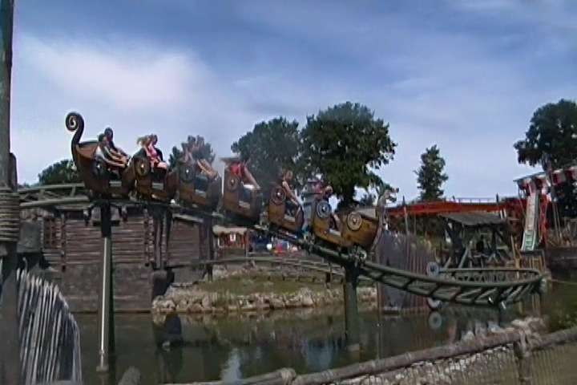
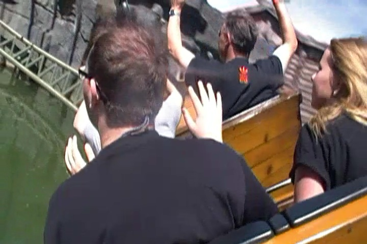

| |
Schlange von Midgard Review

We're here at Hansa Park where's we'll be revewing their family coaster. Schlange von Midgard. This is an...intersting coaster. IT's another one of those rides that straddles the line between kiddy coaster and family coaster. Hard to really tell what it is. So let's just hop in the cars, pull down the lap bars, and away we go. We head into a building cause...much like Fluch von Novgorod, this ride has a a dark ride section before it as well. We come across an old man on a rock. Because I don't speak German, I have no idea what he said. But it probably has something to do with Dragons since this ride is themed to a dragon. We then climb this tiny lifthill. And BOOM!! We see the dragon projected onto a smokescreen that we just go right through. We then break into daylight, go down this tiny little curved drop into a ditch. Wee!!! We head up and twist on down to the ground, or rather, the water. We go around a curved hill. That's fun. And then go over a small little hill. We go through a turn that gives us some laterals, pass by the dragon again, and into the brake run. Aww. It's a short little ride. But don't worry. You get to go twice. I guess they need us to slay the dragon we just took out. So yeah. It's a really fun little kiddy coaster or family coaster. The theming is great, and it's just an all around fun ride.
4/10
Location: Hansa Park
Opened: 2011
Built by: Gerslauter
Last Ridden: June 17, 2014
Schlange von Higard Photos

Home
|